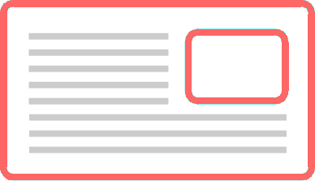
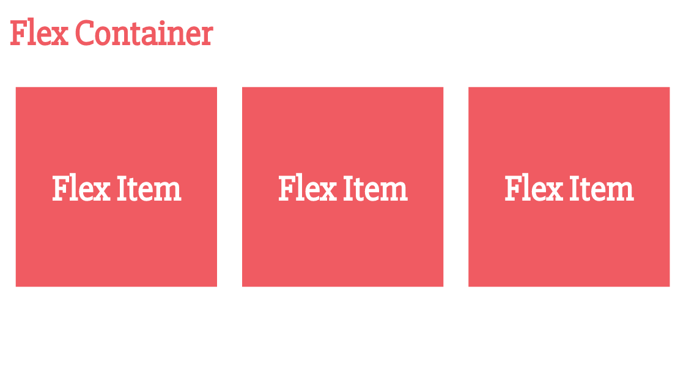
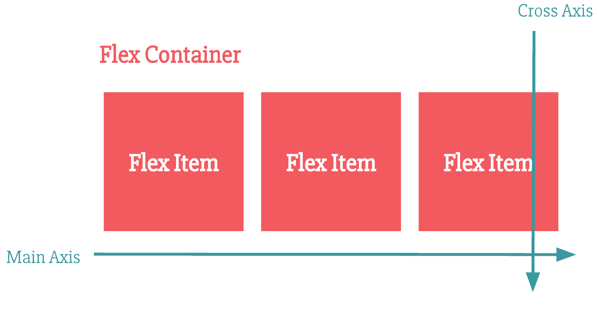

Flexbox Layouts
Welcome!
Girl Develop It is here to provide affordable and accessible programs to learn software through mentorship and hands-on instruction.
Some "rules"
- We are here for you!
- Every question is important
- Help each other
- Have fun
Introductions
Tell us about yourself.
- Who are you?
- What do you hope to get out of the class?
- What is your favorite vacation spot and why?
What we will cover
- What is the Flexible Box Model?
- How to decide when to use Flexbox
- Broswer support and fallbacks
- Flexbox properties and what they do
What to expect
- Flexbox is a new way of thinking about layouts - this takes time and practice
- We will cover all the flexbox properties and also experiment on a "real" website
What Is Flexbox?
"The CSS3 Flexible Box, or flexbox, is a layout mode providing for the arrangement of elements on a page such that the elements behave predictably when the page layout must accommodate different screen sizes and different display devices."
- MDN (Mozilla Developer Network)
Flexbox is a CSS layout mode
- Block layout: for stacked elements
- Inline layout: for text
- Table layout: for (you guessed it) tables
- Positioned layout: for elements without much interaction with other elements
- Flexbox layout: designed for coding responsive elements that can be resized smoothly
Floats
...were originally meant to float text around an image.

...that's it.
Why we love Flexbox
- Can replace floats to align elements smoothly
- Automatic distribution of extra space
- Vertical centering!!
- Less code! More efficiency and less calculations of paddings, margins, widths
Browser Support
Fallback Support
.flex-container {
display: flex;
display: inline-block;
}
Another option: IE conditional classes to apply old layout and positioning techniques targeting older IE browsers
Autoprefixer is your friend!
Are you ready to learn some Flexbox?

Flexbox Basics
The Flexbox Axes
Let's Get Started!
.flex-container {
display: flex; /* or inline-flex */
}
Flex-Direction
Establishes the direction of the main axis
.flex-container {
display: flex;
flex-direction: row;
/* values:
row(default) | row-reverse | column | column-reverse
*/
}
Flex-Wrap
.flex-container {
display: flex;
flex-direction: row;
flex-wrap: nowrap;
/* values:
nowrap(default) | wrap | wrap-reverse
*/
}
Flex-Flow:
A shorthand for 2 flexbox properties
.flex-container {
display: flex;
flex-flow: row nowrap;
/* is the same as:
flex-direction: row;
flex-wrap: nowrap;
*/
}
Justify-content:
.flex-container {
display: flex;
flex-flow: row wrap;
justify-content: flex-start;
/* values:
flex-start (default) | flex-end | center | space-between | space-around | space-evenly;
*/
}
Align-items:
.flex-container {
display: flex;
flex-flow: row nowrap;
justify-content: space-between;
align-items: stretch;
/* values:
flex-start | flex-end | center | baseline | stretch (default);
*/
}
Let's Develop It
Drag the 'exercise' folder into your text editor and complete the following exercises:
- Exercise 1: Create a horizontal navigation with all links at the top right of the page.
Bonus: Create a media query (min-width: 320px) so the navigation is stacked and center aligned on mobile. - Exercise 2: Center the headline horizontally and vertically in the hero image.
Bonus: Add a call-to-action button (Read More) centered under the headline.
Let's Develop It
What about Flex Items?
Order:
- Controls the order in which the items appear
- Does NOT change the source order
- All items default to order: 0
.item1 {
order: 2;
}
.item2 {
order: -4;
}
Align-self:
Overrides the align-items property set on the flexbox container
.flex-container {
align-items: center;
}
.item1 {
align-self: flex-start;
/* values:
auto | flex-start | flex-end | center | baseline | stretch;
*/
}
Auto Margins and Flexbox
Setting a margin: auto on a flex item can be used to position the flex item using the available extra space.
.item2 {
margin-left: auto;
}
Auto Margins and Flexbox
.item1 {
margin-left: auto;
}
Let's Develop It
- Exercise 3: Change the About section with the image aligned to the right of the text.
Bonus: Change the order of the About section to have the picture stack on top of the text in smaller devices
Flexibility
"The defining aspect of flex layout is the ability to make the flex items “flex”, altering their width/height to fill the available space in the main dimension. A flex container distributes free space to its items proportional to their flex grow factor, or shrinks them to prevent overflow proportional to their flex shrink factor."
Flex Shorthand
.flex-item {
flex: 0 0 auto;
}
/* is equal to */
.flex-item {
flex-grow: 0;
flex-shrink: 1;
flex-basis: auto;
}
3 Flex properties
- flex-grow: specifies the flex grow factor of a flex item. Default is 0.
- flex-shrink: specifies the flex shrink factor of a flex item. Default is 1.
- flex-basis: specifies the initial size of the flex item, before any available space is distributed according to the flex factors. Default is auto.
A closer look at how the flex proportional values work
Basic Flex Values
There are 4 default values for flex properties:
- flex: initial; /* (Equivalent to flex: 0 1 auto) */
- flex: auto; /* (Equivalent to flex: 1 1 auto) */
- flex: none; /* (Equivalent to flex: 0 0 auto) */
- flex: 'integer'; /* (Equivalent to flex: 'integer' 1 0) */
Let's Develop It
- Exercise 4: Arrange the cards into a responsive grid with each card's content aligned in a column.
Resources
- The W3C Spec: CSS Flexible Box Layout
- CSS-Tricks: A Complete Guide to Flexbox
- Flexyboxes: Flexbox playground and code generator
- Flexbugs: A community-curated list of flexbox issues and cross-browser workarounds for them
- Flexbox Froggy: A fun 'frogger' computer game to learn Flexbox
Questions?
GDI Course Survey
Your feedback is valuable. Tell us what worked and what we can improve on.